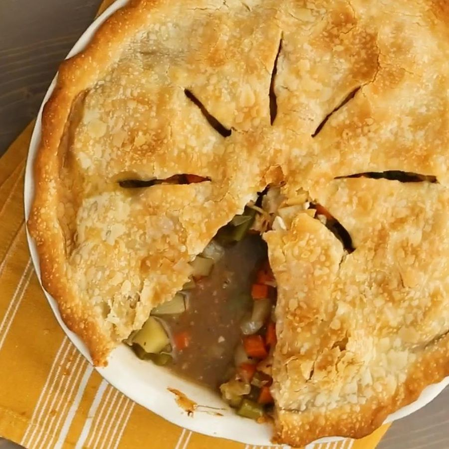

Veggie Pot Pie

Description
Vegan pot pie is a southern classic that has a heavy combination of veggies
in a classic American pie form.
Ingredients
- 2 tablespoons olive oil
- 8 ounces mushrooms, sliced
- 1 onion, chopped
- 1 clove garlic, minced
- 2 large carrots, diced
- 2 potatoes, pelled and diced
- 2 stalks celery, sliced 1/4 inch wide
- 2 cups cauliflower florets
- 1 cup fresh green beans, trimmed and snapped to 1/2 inch pieces
- 3 cups vegetable broth
- 1 teaspoon kosher salt
- 1 teaspoon ground black pepper
- 1/4 cup water
- 2 tablespoons cornstarch
- 2 tablespoons soy sauce
- 1 (14.1 ounce) package double-crust pie pastry, thawed
Directions
- Gather the ingredients. Preheat the oven to 425 degrees F (220 degrees C)
- Heat oil in a large skillet or saucepan. Add mushrooms, onions, and garlic; cook
for 3 to 5 minutes, stirring frequently. Stir in carrots, potatoes, and celery. Stir
in cauliflower and green beans; add vegetable broth and bring to a boil. Reduce heat and
simmer until vegetables are just render. about 5 minutes. Season with salt and pepper.
- Mix water, cornstarch, and soy sauce in a small bowl until cornstarch is competely dissolved;
stir into vegetables and cook until sauce thickens, about 3 minutes.
- Roll out 1/2 of the dough to line an 11x7-inch baking dish. Pour vegetable filiing into the
pastry-lined dish. Roll out remaining dough; arrange over filling, then seal and flute the edges.
- Bake in a preheated oven until pie is golden brown on top, about 30 minutes.